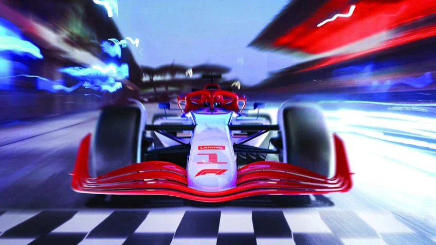

Lenovo is a global technology powerhouse, ranked at 217 in the Fortune Global 500, and a $62 billion revenue company that employs 77,000 people worldwide focused on delivering “smarter technology for all”. Building on our success as the world’s number one PC maker, Lenovo is expanding its research into growth areas to advance “New IT” technologies (client, edge, cloud, network, and intelligence).
INNOVATION
Innovation is What We Do Best
Lenovo’s continued investment in innovation and commitment to research and development is changing the way we live and work today and for years to come. Those innovations need to progress in harmony with our planet and its people, and so Lenovo prioritizes corporate citizenship in all that it does - from exploring net-zero emissions to global philanthropy. From cities studded with edge computing cabinets that help stop traffic accidents to a ‘Cyber Space’ room where people interact with life-size objects on a transparent screen, our whole idea of computing is changing. The real and virtual worlds are colliding – not metaphorically, but in a very real way.

IMPACT
We’re Committed to Being Good Corporate Citizens
Lenovo is determined to improve our planet and society by minimizing Lenovo’s environmental impact, promoting social equity through its business and via the Lenovo Foundation, and ensuring ethical, responsible, and transparent operations. In January 2023, Science Based Targets initiative, making it the first PC and smartphone maker and one of only 139 companies around the world with targets validated by the Net-Zero Standard. Lenovo’s goal is to positively impact 15 million people by 2025 through the work of global philanthropy partnerships and programs, led by the Lenovo Foundation.
Why Lenovo?
People purchase Lenovo computers for their legendary keyboard ergonomics, highly durable build quality—especially in the ThinkPad lineup—and excellent price-to-performance ratio across their gaming and mainstream lineups.
Lenovo is a top choise for several standout reasons:
Legendary Keyboards: ThinkPads are widely praised by writers, programmers, and business professionals for their tactile feedback and ergonomic design.
Durability & Reliability: Models like the ThinkPad undergo rigorous military-spec testing, making them highly resilient for travel and demanding environments.
Value for Money: Lenovo consistently offers competitive pricing, making premium features and robust specs more affordable compared to competitors like Apple.
Enterprise Support: Lenovo provides excellent warranties, repairability, and easy upgrade options, making them the standard for banks and hospitals.
Diverse Product Lines:
ThinkPad:Best for business, IT, and enterprise use.
Legion & LOQHighly rated for gaming, offering excellent thermal management and high-refresh-rate displays.
Yoga & IdeaPadPremium, lightweight, and versatile options for students and everyday creators.
Sample Web Tutorial Video:
Embedded Academic Insights(IFrame):
(note: The Iframe above lenovo and its Products.)
Important Links
Customer can explore the following external links for Product Information